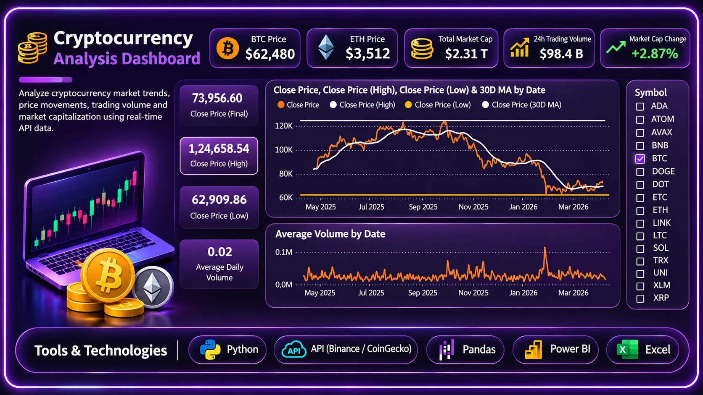
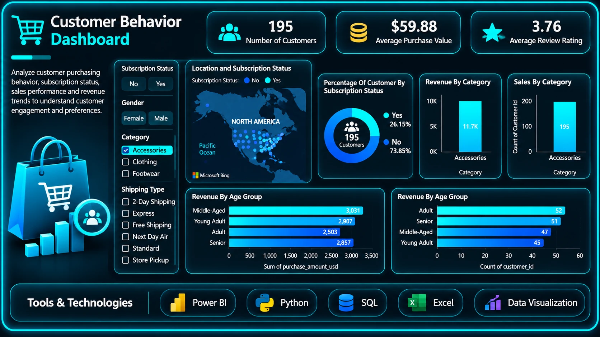
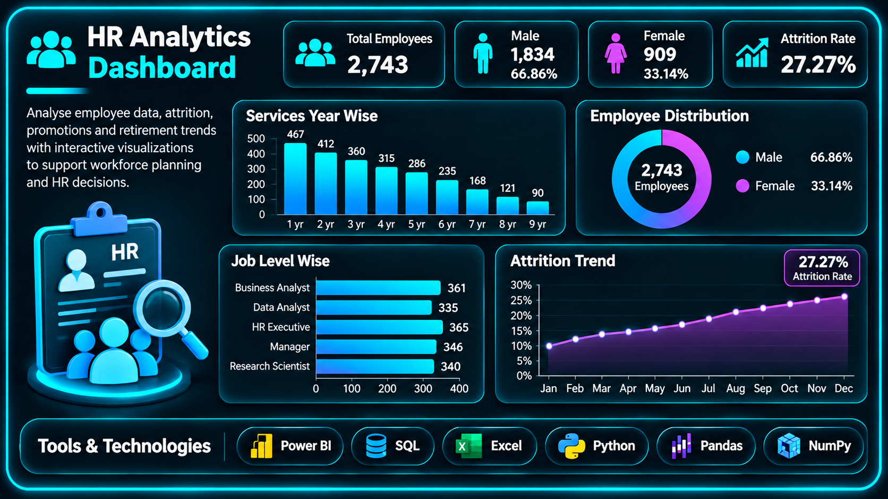
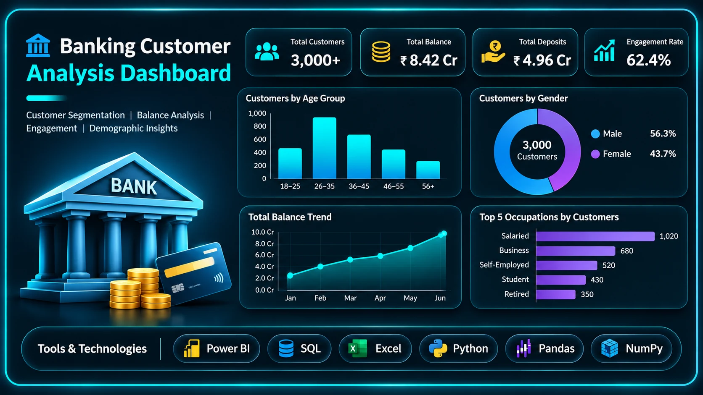
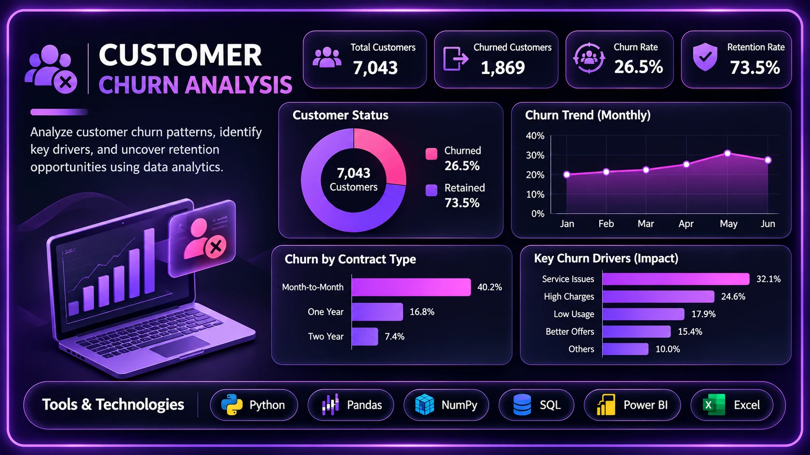

SQL
Writing queries to extract, filter, join and analyse structured business data.
MIS Executive · Data Analyst · Pune
I work with SQL|
Data Analyst with hands-on experience in data cleaning, exploratory analysis, dashboard development and business reporting. Currently working as an MIS Executive at GK Energy Ltd., where I manage operational data, develop MIS reports and track business performance using Advanced Excel.
01 · About Me
I’m a Computer Science graduate with hands-on experience in MIS reporting, data analytics and business intelligence. Currently working as an MIS Executive at GK Energy Ltd. Pune, Maharashtra, I focus on managing operational data, developing Excel-based reports, validating datasets and tracking business performance to support informed decision-making.
Previously, I completed a six-month Data Analyst internship at Maxgen Technologies Pvt. Ltd. Pune, Maharashtra, where I worked with Python, SQL, Advanced Excel and Power BI across data cleaning, exploratory data analysis, dashboard development and reporting. My earlier experience in Python development also strengthened my understanding of programming and task automation.
I enjoy transforming complex datasets into structured reports, interactive dashboards and actionable business insights. I’m continuously expanding my analytical and technical capabilities, with a focus on Data Analytics, MIS Reporting and Business Intelligence.
02 · Skills
Writing queries to extract, filter, join and analyse structured business data.
Building interactive dashboards and visual reports to monitor business performance and KPIs.
Performing data cleaning, exploratory analysis and analytical tasks using Python libraries.
Creating operational MIS reports, consolidating datasets and analysing business data using advanced Excel functions.
Managing operational datasets, preparing reports, validating information and maintaining accurate business records.
Transforming raw business data into meaningful insights through analysis, visualization and accurate reporting.
03 · Experience & Education
GK Energy Ltd. · Pune, Maharashtra.
Maxgen Technologies Pvt. Ltd. · Pune, Maharashtra.
Tecspeak IT Solutions
Sharad Institute of Technology, College of Engineering, Ichalkaranji (SITCOE)
04 · Projects
Transforming raw data into meaningful insights through analytics, dashboards and visualization.

Python · Financial AnalyticsAnalysed cryptocurrency market data using Python and Binance and CoinGecko APIs. Explored historical price movements, trading volume and market capitalization, applying exploratory analysis and risk evaluation with Power BI visualizations.

Data Analytics · Customer InsightsAnalysed customer purchasing patterns, engagement trends and behavioural indicators using Python, SQL and Excel. Performed exploratory data analysis and developed Power BI visualizations to communicate findings and support data-driven decisions.

Power BI · HR AnalyticsDeveloped an interactive HR Analytics dashboard using Power BI to explore employee data and workforce patterns. Analysed employee attrition, demographics, salary distribution and workforce trends to generate meaningful insights and support data-driven HR decisions.

Power BI · Customer AnalyticsDeveloped an interactive Power BI dashboard using 3,000+ customer records to analyse customer demographics, banking balances, deposits and engagement. Used SQL, Python and Excel for data preparation, analysis and customer segmentation to generate business insights.

Python · Customer AnalyticsPerformed exploratory data analysis to identify customer churn patterns, customer segments and potential retention-risk indicators. Used Python, Pandas and NumPy for data preparation and analysis, with visual reporting to communicate key findings.
05 · Certifications
Data Visualisation: Empowering Business with Effective Insights Job Simulation
View Credential ↗06 · Learning Log
I add something here every time I learn a new concept, tool or technique.
07 · Contact
I'm actively looking for Data Analyst opportunities. If you have a role, a project or just a question, pick any way below to reach me.